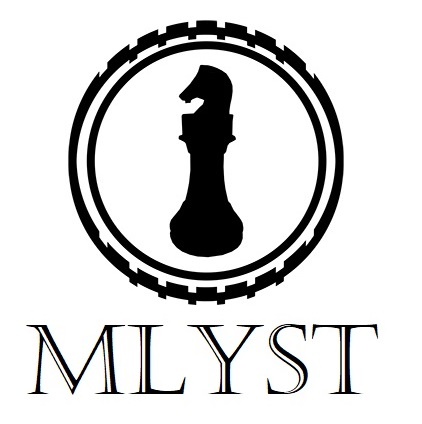
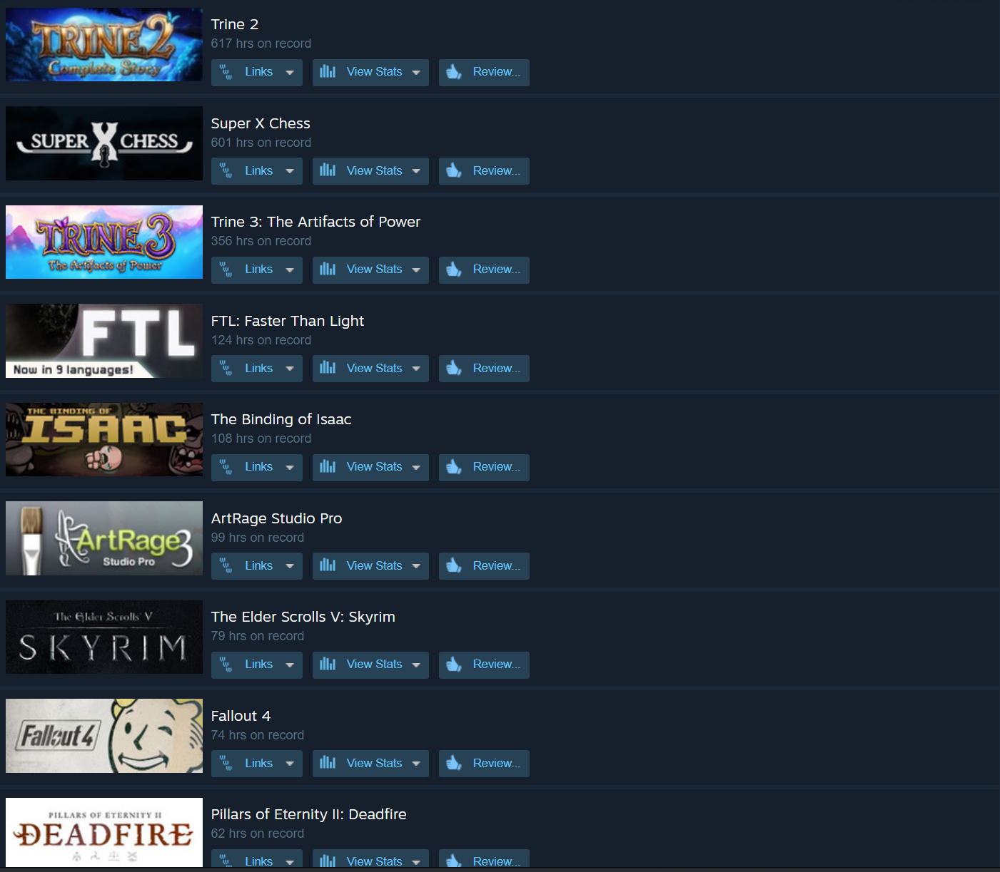
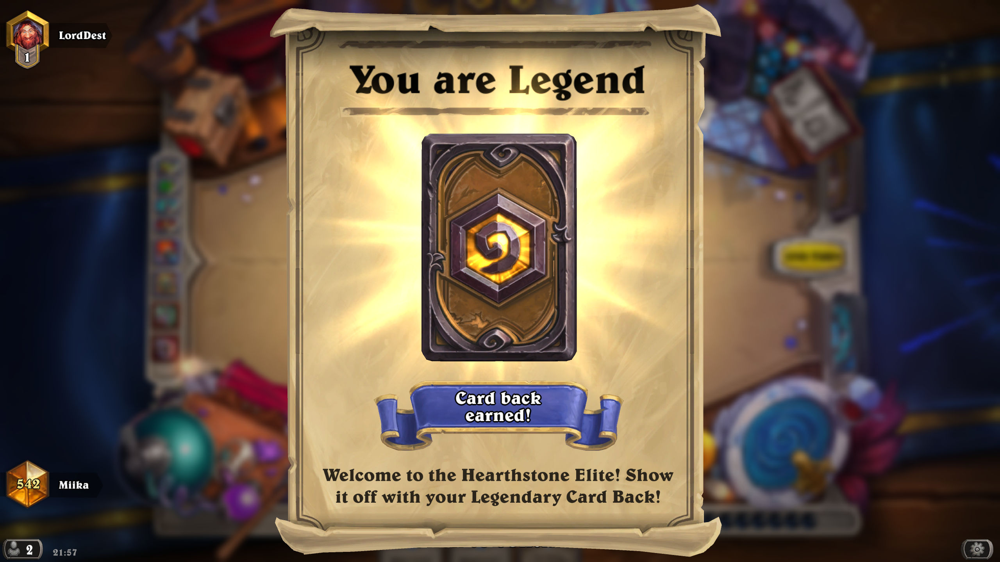
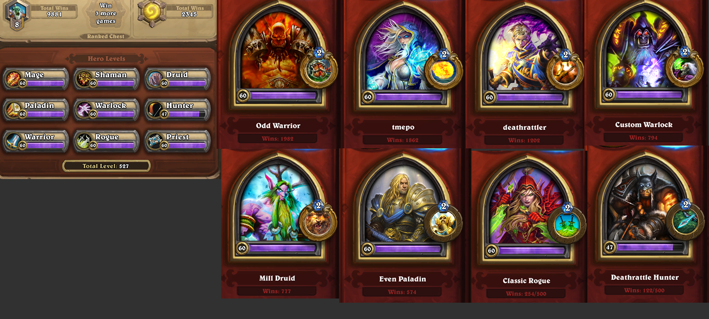
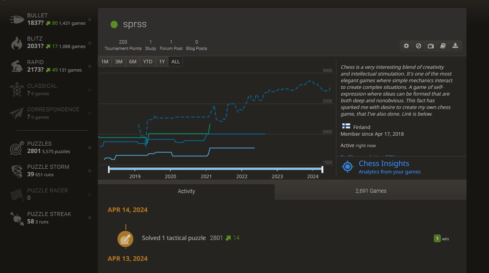
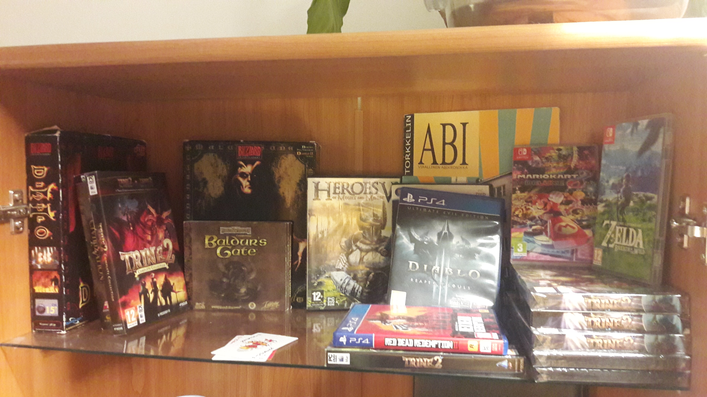
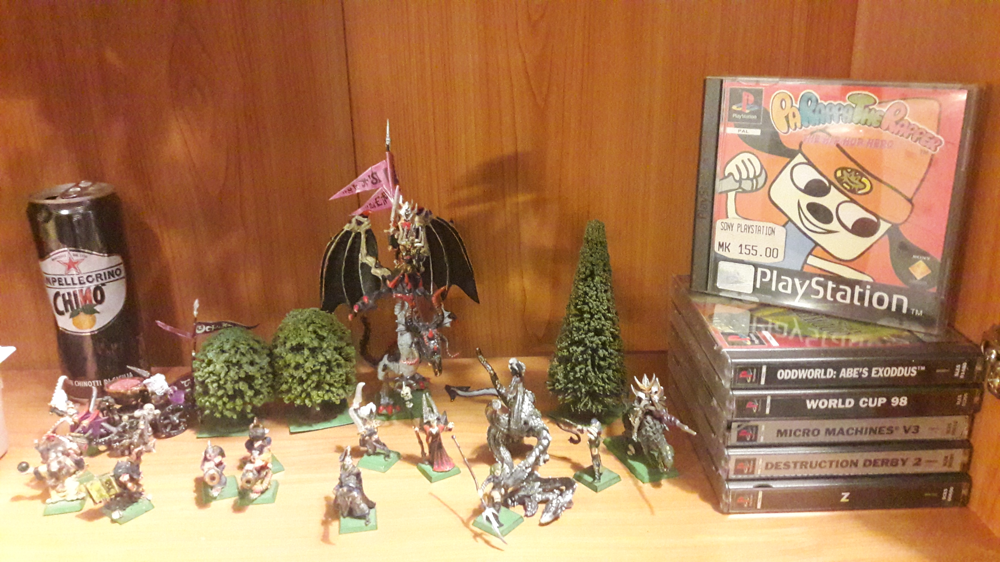

You can donate if you are a true fan and want to support the game development of future games:
Mlyst is a game development and education provider providing digital tool lessons by game developer and teacher Miika Pihkala. Mlyst is into systemic games. Mlyst is into elegancy and emergent properties. Here's a link to understand better what it means.
Here's a video about difficult Game Design problems:
My name is Miika Pihkala.
I'm open and agreeable personality. Not neurotic. Passion driven.
I'm interested in creating interesting systems and having nice things to think.
I understand others easily. I don't judge you for having different kind of brains and views than me, it's just how things are in life! But it still feels interesting if you can provide different kind of views than I have.
Social person, but also has hermit tendencies, because of being as much a dreamer as a man can be. So I'm happy with others and on my own, it's a win-win situation! :)
Very low stress levels in general. Very much a zen-like person. But I do get very easily jump scares from sudden noises. I don't have psychopathic or narcissistic personality, I have normal emotions and there's a lot of sensitivity in me. I have high integrity, honesty and feeling of purpose. There's some laziness in me, though it's also a strength in right context.
I do have a sense of superiority in me. Most people feel fools to me, but I can still enjoy my time with them very much. I just don't feel intellectually connected and I'm not that interested in what they say or feel that I can learn anything too useful from them. Sometimes I'm wrong and I actually do feel that that somebody can make me learn something essential and interesting, but it's very rare. It's much more probable that I can learn interesting and important things by thinking myself. It feels like noise instead of signal. Sometimes people are good at being funny and it's amusing. Sometimes they have a lot of ideas, but it's concerning about something irrelevant and boring. I don't share too much interests with most people.
What are some good game design books?
- My favourite game design book is Designing Games: A Guide to Engineering Experiences [Tynan Sylvester]. My second most favourite game design book is The Art of Game Design: A Book of Lenses[Jesse Schell].
Do you have irrational fears?
- Yes, I've got a fear of heights, but it has got better since I visited Sicily, which is really mountainous. So facing the fear has helped me.
Some things that you like?
- Improvisational theatre, standup comedy, movies, games, escape rooms, writing, philosophy, psychology.. ice cream.






© Miika Pihkala